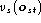

A HMM consists of a number of states. Each state j has an associated
observation probability distribution  which
determines the probability of generating observation at
time t and each pair of states i and j has an associated
transition probability
which
determines the probability of generating observation at
time t and each pair of states i and j has an associated
transition probability  . In HTK the entry state 1 and
the exit state N of an N state HMM are non-emitting.
. In HTK the entry state 1 and
the exit state N of an N state HMM are non-emitting.
Fig. 7.1 shows a simple left-right HMM with five states in total. Three of these are emitting states and have output probability distributions associated with them. The transition matrix for this model will have 5 rows and 5 columns. Each row will sum to one except for the final row which is always all zero since no transitions are allowed out of the final state.
HTK is principally concerned with continuous
density models in which each observation probability distribution
is represented by a mixture Gaussian density. In this case,
for state j
the probability  of generating
observation is given by
of generating
observation is given by
where  is the number of mixture components
in state j for stream s,
is the number of mixture components
in state j for stream s,
 is the weight of the m'th component and
is the weight of the m'th component and
 is a multivariate Gaussian
with mean vector
is a multivariate Gaussian
with mean vector  and
covariance matrix
and
covariance matrix  , that
is
, that
is
where n is the dimensionality of  . The exponent is
a stream weight and its
default value is one. Other values can be
used to emphasise particular streams, however, none of the standard
HTK tools manipulate it.
. The exponent is
a stream weight and its
default value is one. Other values can be
used to emphasise particular streams, however, none of the standard
HTK tools manipulate it.
HTK also supports discrete probability distributions in which case
where  is the output of the vector
quantiser for stream s
given input vector  and is the
probability of state j generating symbol v in stream s.
and is the
probability of state j generating symbol v in stream s.
In addition to the above, any model or state can have an
associated vector of duration parameters
 .
Also,
it is necessary to specify the kind of the observation
vectors, and the width of the observation vector in each stream.
Thus, the total information needed to define a single HMM is
as follows
.
Also,
it is necessary to specify the kind of the observation
vectors, and the width of the observation vector in each stream.
Thus, the total information needed to define a single HMM is
as follows